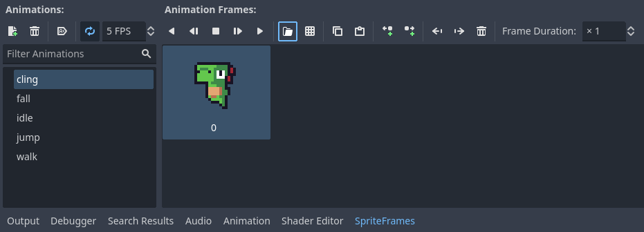

IMPORTANT! While not required, it is strongly recommended to have done the Wall Jump module before this one!
Wall clinging is the ability to stick or slide down walls. Adding this can give more flexibility and freedom to the player by giving them more time to make decisions.
Before we can start adding the functionality of wall clinging, we need the new sprites! Go ahead and open up the Wall Cling folder in your VGDC-2024 Assets folder, find the appropriate file and drag it into your file system.
If you are not taking this course in person, you can download the assets Here
Now we need to add a new animation to our player's sprite frames. Navigate to your player scene's AnimatedSprite2D then it's sprite frame. Create a new animation called cling and import the new file as a frame.
Next navigate to the player script. Wall clinging requires two variables: one to set the fall speed of the player while wall clinging and one boolean to store whether the player is currently clinging to a wall (important for animations.)
# Player Stats
@export var speed = 100.0
@export var acceleration = 800.0
@export var friction = 1200.0
@export var jump_velocity = -300.0
@export var gravity_scale = 1.0
@export var terminal_velocity = 500.0
@export var cling_speed = 75.0
# Reference Variables
var gravity = ProjectSettings.get_setting("physics/2d/default_gravity")
@onready var sprite = $AnimatedSprite2D
var clinging = falseNext we need to check each frame if the player is clinging to a wall. To test this we will check if they are holding a movement direction and they are on a wall but not the floor. We will do this each frame in the _physics_process function like so:
func _physics_process(delta):
var input_axis = Input.get_axis("Left","Right")
clinging = is_on_wall_only() and input_axis and velocity.y >= 0.0
apply_gravity(delta)
handle_jump()
apply_acceleration(input_axis,delta)
apply_friction(input_axis,delta)
update_animations(input_axis)
move_and_slide()Then we need to change the player's terminal velocity based on whether or not they are clinging to a wall. We can do this in the apply_gravity function like so:
func apply_gravity(delta):
var current_terminal_velocity = cling_speed if clinging else terminal_velocity
if not is_on_floor():
velocity.y += gravity * gravity_scale * delta
velocity.y = min(velocity.y,current_terminal_velocity)Note the change in the min method of terminal_velocity to current_terminal_velocity.
Finally, we can edit the update_animations function by playing the cling animation when the clinging variable is true:
func update_animations(input_axis):
# Grounded Animations
if input_axis:
sprite.flip_h = input_axis < 0
sprite.play("walk")
else:
sprite.play("idle")
# Aerial Animations
if not is_on_floor():
if velocity.y <= 0:
sprite.play("jump")
else:
sprite.play("fall")
if clinging: sprite.play("cling")And that is all! Go ahead and try out your new ability and mess around with some variables, then go ahead and move on to a new module.